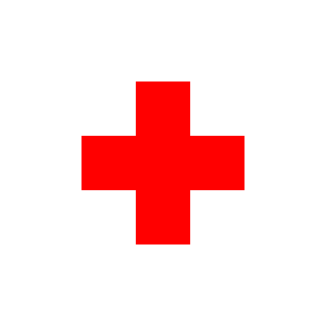

Naše mise
Naším cílem je poskytovat kvalitní zdravotní péči s moderním přístupem a individuálním přístupem ke každému pacientovi.

Naším cílem je poskytovat kvalitní zdravotní péči s moderním přístupem a individuálním přístupem ke každému pacientovi.
Náš tým tvoří zkušení lékaři, zdravotní sestry a odborníci, kteří se věnují péči o vaše zdraví.
Zdravotní centrum bylo založeno s cílem inovovat tradiční přístupy k péči a přinášet nové technologie do zdravotnictví.
Pondělí - Pátek: 08:00 - 18:00
Certifikace: ISO 9001
Hodnocení: 95/100 (Vynikající péče)
Sledujte nás